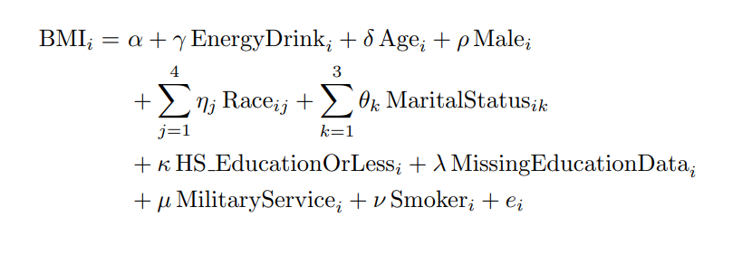
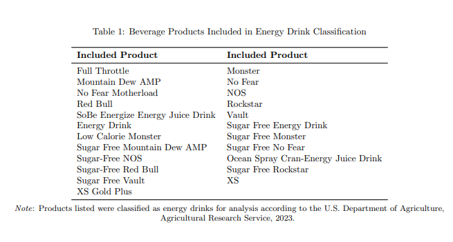
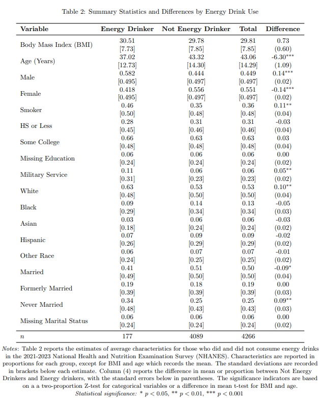

The global energy drink market reached $73.81 billion in 2023 and is projected to grow by 7.9% annually through 2030. At the same time, U.S. obesity rates have climbed steadily — obesity accounted for an estimated 6.76% of U.S. GDP ($1.4 trillion) in 2018 alone.
Prior work tells conflicting stories. A randomized trial by Rush et al. found that energy drink consumption significantly increased fat creation at the cellular level. A meta-analysis by Tabrizi et al. suggested that caffeine intake generally promoted BMI reduction, but energy drinks were not the sole caffeine source. This study targets the neglected middle ground: the aggregated, real-world association between energy drinks as a specific product and BMI in a nationally representative sample.
Data came from the August 2021–August 2023 National Health and Nutrition Examination Survey (NHANES). NHANES uses a multi-year stratified clustered design and oversamples populations predisposed to health complications (children, adults 60+, African Americans, Asians, Hispanics). Sampling weights were applied throughout to produce nationally representative estimates.
The final sample was restricted to adults aged 18–64 who completed an in-person examination (necessary for BMI measurement), yielding n = 4,266. Dietary, Demographic, Examination, and Questionnaire subsets were merged on unique respondent sequence numbers.
Energy drink consumption was determined from the two-day Individual Foods dietary recall. Respondents who consumed any USDA food-code product classified as an "Energy Drink" on either day were coded as consumers, regardless of quantity. Controls included age, gender (male/female), race (five categories), marital status (four categories), education (high school or less vs. some college or more), military service (active duty, any branch), and smoking (100+ lifetime cigarettes).


The core model regresses BMI on energy drink consumption and a growing set of controls across four progressively specified OLS models:
BMIi = α + γ·EnergyDrinki + δ·Agei + ρ·Malei + Σ ηj·Raceij + Σ θk·MaritalStatusik + κ·HS_EducationOrLessi + μ·MilitaryServicei + ν·Smokeri + ei
The coefficient of interest is γ: the effect of energy drink consumption on BMI after accounting for all other predictors. All models use robust (heteroskedasticity-consistent) standard errors and NHANES sampling weights. Reference categories are White, Female, and Married.
The critical assumption for causal interpretation (MLR.4, zero conditional mean) cannot be confirmed without a control for physical activity, which was not included in this analysis. The coefficient γ should therefore be interpreted as an association, not a causal effect.
| Model | Controls | γ (Energy Drink) | p-value | R² |
|---|---|---|---|---|
| Model 1 | None | 1.79 | < 0.001 | 0.003 |
| Model 2 | Age, gender, race | 1.65 | < 0.01 | 0.058 |
| Model 3 | + Marital status, education | 1.90 | < 0.001 | 0.071 |
| Model 4 | + Military service, smoking | 1.83 | < 0.001 | 0.079 |
The energy drink coefficient remained statistically significant across all four specifications, ranging from 1.65 to 1.90 BMI points. The stability of γ through the progressive addition of controls, including controls that are themselves correlated with both energy drinks and BMI, suggests the association is not driven by observable confounders in the model.
Among the control variables in Model 4, age (β = 0.09, p < 0.001), being Black (β = +2.10 relative to White), being Asian (β = −4.25), and having high school education or less (β = +0.83, p < 0.001) were all significant. Military service was positively associated with BMI (β = +1.14, p < 0.05), potentially reflecting post-service weight gain. Smoking was not statistically significant.

The leading omitted variable concern is physical activity. If energy drink consumers are systematically more or less active than non-consumers, the coefficient γ captures that difference in addition to any direct effect of energy drinks on BMI. The direction of the bias is ambiguous: energy drinks are marketed to active consumers (which would bias γ downward), but are also associated with sedentary behaviors like gaming (which would bias γ upward).
A secondary concern is social desirability bias in dietary self-report. If higher-BMI respondents systematically underreport energy drink consumption, the true association could be even larger than estimated. Conversely, the two-day recall window may miss habitual consumption patterns, attenuating the estimate toward zero.
The cross-sectional design precludes analysis of how changes in consumption affect changes in BMI over time. A panel data approach or instrumental variables strategy (for instance, using local energy drink advertising exposure as an instrument) would be needed to move closer to causal identification.
Across all four model specifications, energy drink consumption was associated with a statistically significant and economically meaningful increase in BMI. The finding is consistent with cellular-level evidence from Rush et al. (fat creation increased after energy drink consumption in a randomized trial) and with media reporting on energy drink health risks.
Policy implications are tempered by the findings of Kurz and König, who showed that sugar taxes on soft drinks had limited long-term effects on consumption in France and Hungary. If taxation alone does not curb energy drink use, the health burden identified here may prove difficult to address through price mechanisms.
Future research should incorporate physical activity controls, use a longer NHANES panel, and explore instrumental variables strategies. The consistent positive association found here across specifications, however, provides a strong motivation for that next step.